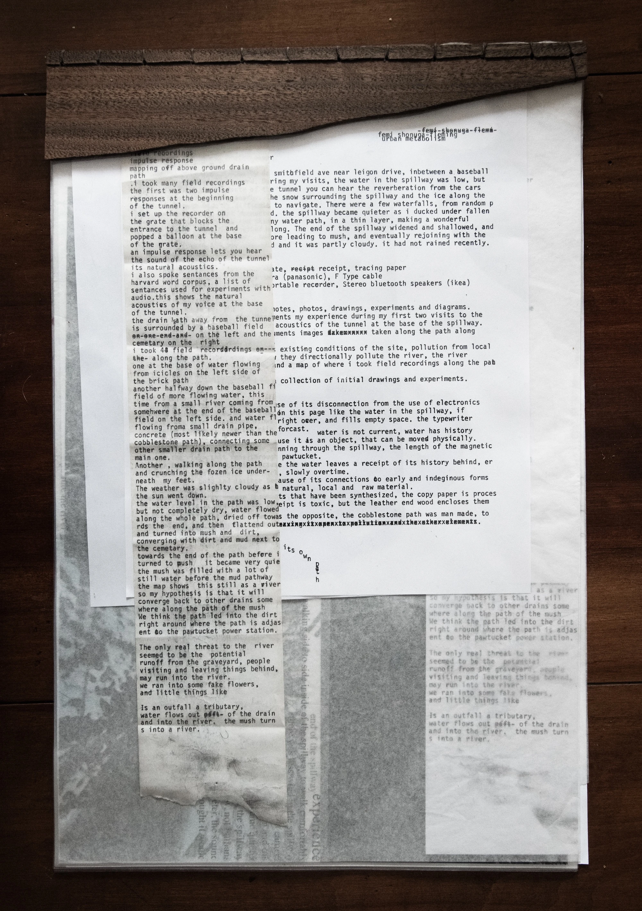
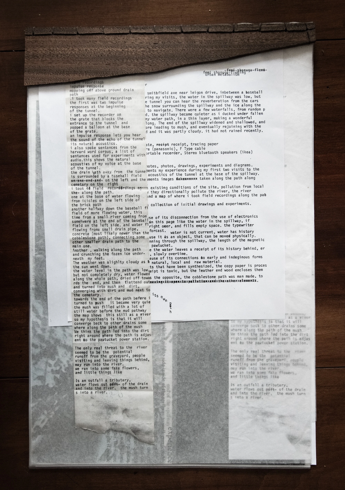

DIRT, SOIL, STASIS
pre 1636
During my research I found that the Lenape Indigenous tribe lived on that land first. Sound became a huge part of my research because it was an ally and familiar medium for me to research the Lenape people and the current day techno and music scene. I then began drawing connections in sound between the Lenape people and the current inhabitants of Bushwick. The rhythm and minimalism in sole heart beat rate drum and vocal use I the indigenous songs of the Lenape people directly related to techno. The ritual practice of performance and dance to simple repeating rhythmic beats and vocal drones directly relates to the ritual practices of attending raves and listening to techno. Both are celebrations, the Lenape people are celebrating the land and the environment, and I am celebrating music, meditation and ritual practice in itself in parallel to the Lenape people. My research on various forms of sonic practice to present my research brought me to granular synthesis because of its relation to nature, generation and generativeness, an initial state of being, and evolution over time.
From Curtis Roads: Microsound p.3
Above the level of an individual piece are the cultural time spans defining the oeuvre of a composer or a stylistic period. Beneath the level of the note lies another multilayered stratum, the microsonic hierarchy. Like the quantum world of quarks, leptons, gluons, and bosons, the microsonic hierarchy was long invisible. Modern tools let us view and manipulate the microsonic layers from which all acoustic phenomena emerge. Beyond these physical time scales, mathematics defnes two ideal temporal boundariesÐthe in®nite and the in®nitesimalÐwhich appear in the theory of musical signal processing.
From Curtis Roads: Microsound p.328 ~ On the Aesthetics of Composing with Microsound
The aesthetic of organized sound places great emphasis on the initial stage of compositionÐthe construction and selection of sound materials. This may involve synthesis, which often begins with microsounds, furnishing the elementary components used in the assembly of higher-level sound objects. Just as the molecular properties of wood, thatch, mud, steel, and plastic determine the architectural structures one can construct with them, so sonic microstructure inevitably shapes the higher layers of musical structure. The middle layers of musical structureÐmesostructureÐarise through interaction with the material.
The formal qualities of granular synthesis directly relate to musical and architectural composition. Granular synthesis and microsound are a lens for me to compose music for architecture, spaces for sound and the ritual of composing and performing experimental music.

Granular synthesis reminds me of grains of sand. The wind blows grains of sand in the wind to create a new portrait in the ground. recorded audio is a trim and cut/sample of that moment in time representing sound visually, sand and dust in relation to minimalism and minimalistic moves within composition. Granular synthesis reminds me of evolution. You start with a set of genes, that is your audio, your initial state, first generation, and as you stretch that state, that initial audio over time, the longer the audio is stretched, the audio adapts to itself and has to inevitably evolve into a new form of being. Granular synthesis reminds me of raindrops in a storm
Land Acknowledgment: We acknowledge that Lantern Hill Trail is located on the ancestral lands of the Mashantucket Pequot Tribal Nation, who have stewarded this land for countless generations. The Mashantucket Pequot people have deep historical, cultural, and spiritual ties to this region, and their ongoing presence and contributions continue to shape this land today. As we walk these trails, we recognize the histories of Indigenous peoples who have cared for this land before us and remain its rightful stewards. We honor their resilience, their traditions, and their connection to the natural world. We encourage all visitors to approach this land with respect, mindfulness, and a commitment to learning about and supporting Indigenous communities both past and present.
The Phillips Pavilion at the Brussels World Fair in 1958 where Iannis Xenakis performed Metastasis, An audio/visual experimental sound performance involving hundreds of speakers and lights.
This structure also uses parabolic curves to design a space for performance, with the idea of spatial audio and the experience. This work by Xenakis was in response to the war and was a cacophony of rolling flashing and soaring lights, synthesized sound, gunshots and other recordings from war. I love to think about architecture in the expression and experience of all the senses at once.

"The Acousmonium is an orchestra of loudspeakers arranged in front of, around and within the concert audience. It has been designed to be directed by a performer who projects a sound work or music into the auditorium space via a diffusion console. The Acousmonium can take many forms, changing at will to adapt to the type of work and to circumstances. It was designed and inaugurated by François Bayle in 1974, and is still mainly used for the performance of acoustic works. But it is also used by artists performing mixed musical forms, improvised music and multimedia." During the Music Concrete movement from the 1940s to the 1970s, people began to experiment with loudspeakers as members of an orchestra and as objects in a spatial performance. They are set up the same way musicians in an orchestra would be placed, with different acacousticualities for different sections of the orchestra, and with composed sound separated to these specific speakers. Alto, Tenor, etc.
1980s Soundsystem Culture in Kingston, Jamaica and Sau Paulo, Brazil

Soundsystem culture brings the community together to engage in the ritual practice of collective deep listing, giving thanks to the land and celebrating dance and music culture. Dub is a subgenre of reggae most popular in the late 1960s and early 1970s. It is commonly considered a subgenre of reggae, though it has developed to extend beyond that style into techno and house music. Generally dub consists of remixes or "dubs" of existing recordings created by significantly manipulating the original, usually through the removal of vocal parts, emphasis of the rhythm and drum sections and with the addition of echos and reverb, with cuts of the original vocals. Because of the importance of the drums and bass in the tracks, it became the most popular genre for the sound system, as the culture focused and competed on making the loudest, bassiest sound systems for emphasizing those parts of the music.
1990s Sacred/Profane and Club Culture in NYC

within a predominant monoculture, the depictions of the sacred and the profane are weaponized to control and erase the imagery of counter-cultural movements, therefore further marginalizing their members. The sacred is elevated as an untouchable realm associated with established values, while the profane is cast as deviant and rebellious counter-cultural movements, seeking safety, work to unlearn narratives and reclaim symbolism to represent their journeys, create new spaces, and build community. The diptych of club and DJ culture: the crowd facing forwards, the elevated dj, the sound coming from the front ~ and the church: the priest at the front, the crowd facing forwards, both collective listening, both gathering for a sonic act, both ritual in nature, both a party in some ways, both giving homage to some god or some earth.
Interesting things happen in the world of Hi-Fi audio. Audiophiles and hifi enthusiasts focus on the highest fidelity sound for their home stereo system. This came from the evolution of vinyl and home listening setups in the 70s but with the rapid advancement of technology, people searched for higher and higher quality sound. This high quality sound refers to a lot of different elements, but most importantly the full range of the frequency spectrum, from bass to high frequencies. In speaker design the most popular way to get bass is with good box design and a really large (16-18in) speaker driver. This is the most efficient use of space and has the most range in the speaker drivers. But for those interested in horns, this becomes a huge architectural and sculptural project. To get bass frequencies from horn loaded speakers, you need a long path and a wide mouth, like feet wide. Im interested in this overlap of incorporating these folding and swirling horn designs in hifi DIY because of its architectural qualities and the idea that the horn as a shape amplifies sound without electronics. It's the architecture that amplifies. These horns are popular in Japanese HiFi and have been made primarily of concrete.


"SUBWOOFER horns are built underneath the floor in a cavity of 1 meter deep. Each horn is driven by 8 x 18" (47 cm) woofers. A total of 16 woofers. Each horn is 9.5 meters long and has a floor mouth area of 2.2 square meters and reproduce starting from 10 Hertz FULL POWER. The real mouth area IS NOT the one on the floor. The real mouth have to be considered together with the side vertical frontal panels. The total horn is calculated onto the listening point considering the side walls and the ceiling loadings. This reduces the floor mouth that is not in open air."
Equilibrium

The speaker stack is a representation, a totem, a shrine, a ritual object in translating sound Each layer of the speaker stack directly correlates to its own architecture and program The bottom of the speaker stack, the bass, beneath a layer of grass, represents the ground and the dirt and the earth beneath our feet. We dance on this land, we kick our feet on this dirt together. The indigenous practice of drum circles and dance give thanks and homage to the ground beneath our feet, we celebrate by moving on the ground. The bass frequencies, with their long wavelengths, take seconds to fill a room, they have the longest history. They tell the stories of the elders, as the high frequencies tell the stories of the future, moving past our ears faster than we can perceive. We can hear down to 60hz, but no more than 20,000. The speaker cabinet is a temple for the speaker driver, an architecture to acoustically amplifying its voice. Of the driver is the person in program, the cabinet is the architecture to make sure that voice is heard loud and clear. There’s a reason the wound copper, the heart of what makes a speaker driver work, is called the voice coil. If your skin, like a drum, is the paper cone attached to the voice coil that’s excited with voltage as purpose to make sound, what would you say? The architecture of the horn lets your voice free, extending your voice through the people. This mechanical object, the speaker driver, so technical in nature, explodes with sound when attached to the proper enclosure. The design of the box, makes a huge difference in the sound of the speaker, as the design of a space make a huge impact on the voices that pass through it. It’s this balance that makes speakers so beautiful. It’s not Ying and Yang, it’s Kaizen: continuous improvement or an uphill battle. There’s no perfect balance, and that’s what makes the experience of spaces so unique. The wood against the speaker diaphragm extends the frequencies through the enclosure and amplifies the sound. Coupling the body to the architecture in the same way creates this deep connection to the space you’re interacting with. The Yari Kanna Copy Paper, the hand carving wood tool in direct connection to the manufactured, machined, clean printer paper. It’s what makes these ritual objects. The use, over and over. The sound system playing songs, hymns, archival recordings, live performances, hours and hours and miles and miles of wavelengths that makes this architecture tell its own story. There is this ephemeral nature to an object that emits sound: you hear a song and then it’s over, you may never hear it again, there’s no evidence it was ever played, you may even forget it the next day, but you can always go back to this object and experiment it new, like a sunrise the next morning. There is real power in the speaker stack. The bass frequencies are so long and big that you can feel them physically, the high frequencies of not tamed can sound shrill like a baby crying or nails on a chalkboard. Years and years of club design and acoustics for the discotheque have led to the design of systems with such personalities and are a testament to our desire to feel sound on a physical comfortable level. This amplifier sounds “warm”. “The highs are easy on the ears”. A kick box you can “feel in your chest”. It’s the same as the car audio people that put 12 speakers in the back of their car, pull up to an empty lot where all of there friends also put 12 speakers in the backs of their cars, and see which systems make your hair fly into the air the most when you push the bass. This is the reason why In loudspeaker design, these tuned systems, not for the room or the venue, but for the people and their ears, are so highly praised, weather it be the smooth deep sound of house music at the paradise garage in heart of NYC the 90s, or the cold harsh punchy kicks reverberating through warehouses at tresor and berghain in Berlin. The most popular and praised speakers designers being Altec Lansing and JBL, speakers originally designed for large scale theatre use, and home audio listening. These designs have been remixed and adapted for small and large scale speaker systems since the 70s and modified versions of their designs are still used in massive venues around the world. When sound is architecture, these speakers appealed to many programs. There’s the designer; that wants them for the living room, the audiophile, that wants the best most “realistic” reproduction of sound for his record collection. “I want to feel like the Beetles are right in front of me on stage”. The average consumer that knows the name is good and wants to listen to anything. The musician that wants personalized sound for amplifying their sound. The monk that treats the sound system as a device for deep listening, where electronically amplified sound is needed, like the ritual of dance music. It is clear, the speaker stack is the temple for the voice.


 
